طريقة الاستخدام، خطوة بخطوة
كل جزء في نافذة RAM Doctor بالصور، لمن يستخدمها أول مرة. لا تحتاج أي خبرة: اقرأ الخطوات بالترتيب أو انتقل إلى ما تريد.
الشرح نفسه موجود داخل البرنامج: اضغط «طريقة الاستخدام» أعلى النافذة لتظهر جولة سريعة تضيء كل جزء وتشرحه. في الجولة: Enter للتالي وEsc للإغلاق.
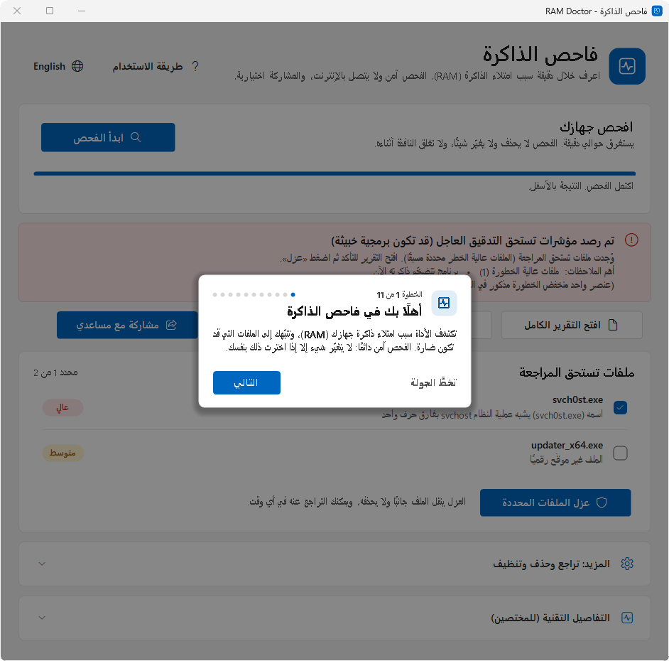
ثلاث خطوات لفتح الأداة
1نزّل الملف
ملف واحد صغير اسمه RAM-Doctor.bat، بدون تثبيت وبدون فك ضغط.
2افتحه
انقر عليه نقرتين. إن ظهرت رسالة Windows protected your PC فاضغط More info ثم Run anyway، ثم اختر «نعم» عندما يطلب ويندوز الإذن.
3خذ الجولة السريعة
في أول مرة يظهر شريط أزرق يعرض عليك جولة لمدة دقيقة. اضغط «ابدأ الجولة»، أو افتحها لاحقًا من زر «طريقة الاستخدام».
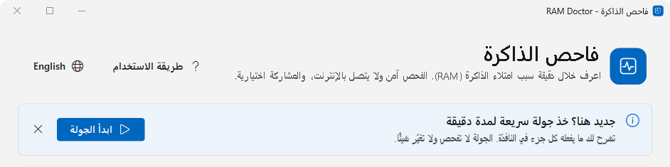
ماذا يفعل كل جزء؟
هذه هي خطوات الجولة نفسها التي تظهر داخل البرنامج، بالترتيب. الجزء المضاء في كل صورة هو الجزء المشروح.
-
01
ماذا تفعل الأداة؟
تكتشف سبب امتلاء ذاكرة جهازك (RAM)، وتنبّهك إلى الملفات التي قد تكون ضارة. الفحص يقرأ فقط: لا يتغيّر شيء في جهازك إلا إذا اخترت ذلك بنفسك.
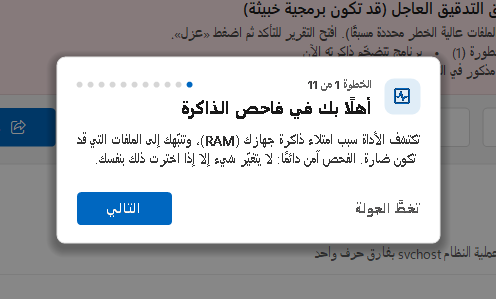
-
02
ابدأ الفحص
اضغط «ابدأ الفحص» والمشكلة موجودة، مثلًا والجهاز بطيء أو الذاكرة ممتلئة. يستغرق الفحص نحو دقيقة.
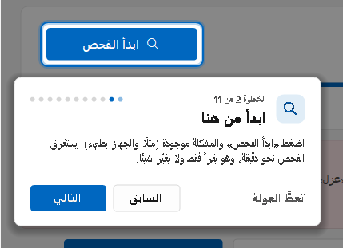
-
03
تابع التقدّم
الشريط والسطر تحته يوضّحان ما يجري فحصه الآن. اترك النافذة مفتوحة حتى يظهر «اكتمل الفحص».
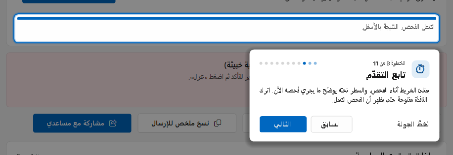
-
04
اقرأ النتيجة
المربع الملوّن يلخّص النتيجة بكلمات بسيطة، ولونه يوضّح الأهمية:
- أخضر: كل شيء سليم
- أزرق: معلومة
- أصفر: يستحق نظرة
- أحمر: يحتاج انتباهك الآن
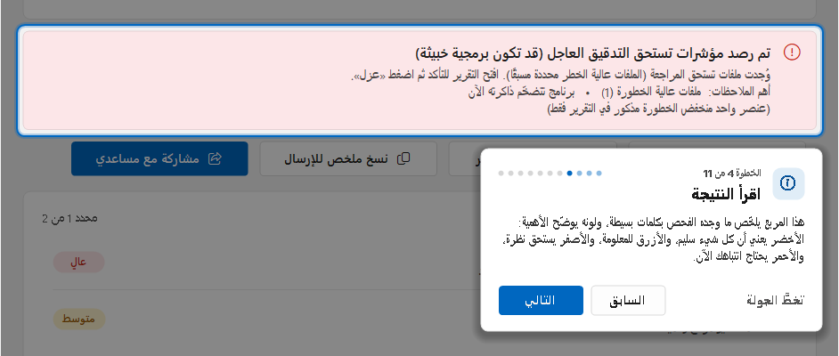
-
05
احتفظ بالنتيجة أو أرسلها
- «افتح التقرير الكامل»: كل التفاصيل في المتصفح.
- «مكان ملف التقرير»: المجلد الذي فيه الملف، لترفقه برسالة.
- «نسخ ملخص للإرسال»: ملخص قصير بلا معلومات شخصية تلصقه في محادثة.
- «مشاركة مع مساعدي»: يظهر فقط إن جهّزه من يساعدك، ويرسل النتيجة إليه بشكل خاص بعد تأكيدك.
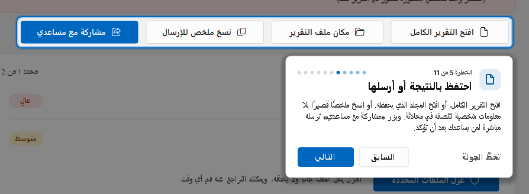
-
06
ملفات تستحق المراجعة
تظهر هذه القائمة فقط إن وجد الفحص ملفات مشبوهة. الوسم الأحمر «عالٍ» يعني أنه غالبًا ضار، والأصفر «متوسط» يحتاج تحققًا. الملفات عالية الخطورة محددة لك مسبقًا، فافتح التقرير قبل أن تقرر.
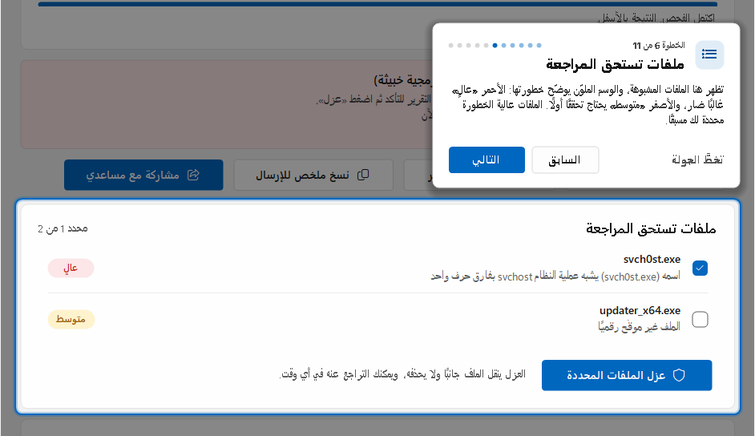
-
07
العزل: آمن ويمكن التراجع عنه
حدّد الملفات ثم اضغط «عزل الملفات المحددة» وأكّد. تتوقف الملفات وتُنقل إلى مكان آمن ولا تُحذف. بعدها أعد تشغيل الجهاز وافحص من جديد لتتأكد أن الذاكرة رجعت طبيعية.
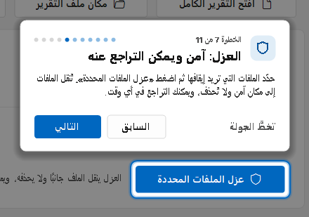
-
08
تراجع وحذف وتنظيف
- «تراجع»: يُرجع آخر عزل كما كان تمامًا.
- «حذف نهائي»: يمسح الملفات المعزولة بلا رجعة، ويطلب تأكيدك أولًا.
- «مسح التقارير»: يحذف تقارير الفحص من سطح المكتب.
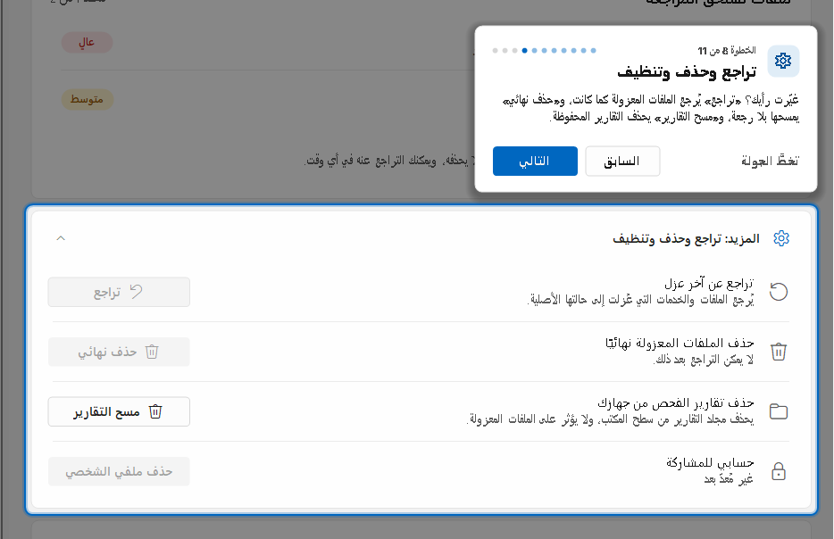
-
09
التفاصيل التقنية
سجلّ للمختصين، ويمكنك تجاهله. إن طلبه منك من يساعدك فافتحه وأرسل له صورة للشاشة.
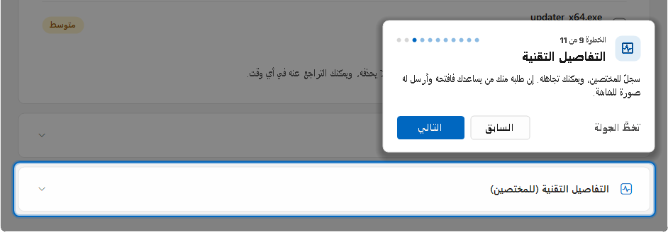
-
10
اللغة
بدّل بين العربية والإنجليزية في أي وقت. الفحص التالي يكتب تقريره باللغة التي اخترتها.
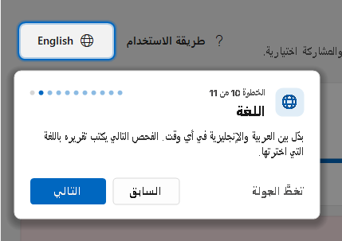
-
11
تحتاج مساعدة؟
زر «طريقة الاستخدام» يفتح الجولة من جديد. وإن احترت فاضغط «نسخ ملخص للإرسال» بعد الفحص، والصقه في محادثة مع من يساعدك.
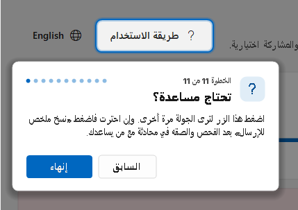
أربعة أشياء تفيدك
«إعادة التشغيل» وليس «إيقاف التشغيل»مع ميزة «بدء التشغيل السريع» في ويندوز لا يُمسح تسرّب التعريف عند الإيقاف. أعد التشغيل ثم افحص من جديد.
الفحص بلا إنترنتلا يتصل الفحص بأي خادم ولا يرسل إحصاءات. لا يخرج شيء من جهازك إلا إذا ضغطت «مشاركة» وأكّدت.
لا إعدادات محفوظةيبقى مجلد التقارير على سطح المكتب (آخر 3 فحوص)، وتحذفه بزر «مسح التقارير». وإن استخدمت العزل أو المشاركة يبقى أيضًا مجلد العزل واسمك للمشاركة، وتحذفهما من النافذة نفسها.
ليس مضاد فيروسات«مشبوه» لا يعني دائمًا «فيروس». راجع التقرير، وإن شككت فاسأل من يساعدك قبل العزل.